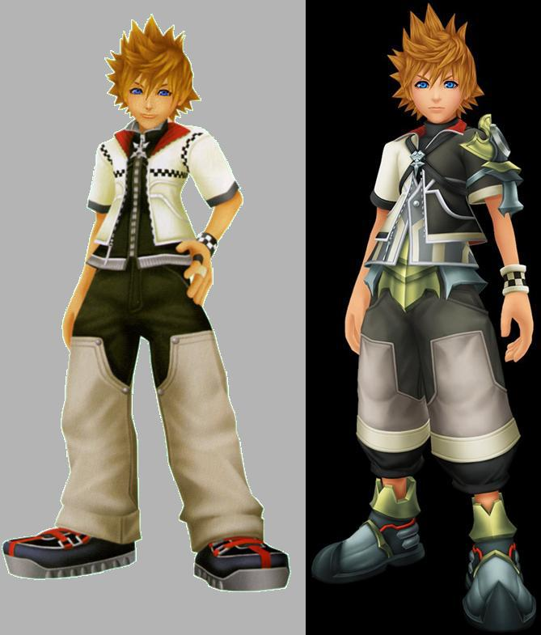
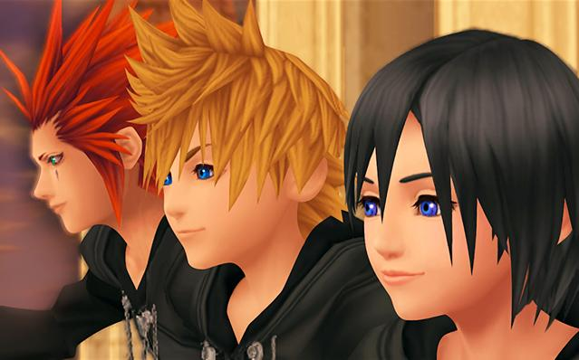

Nobodies
In Kingdom Hearts, there are three components to a person: the body, the heart, and the soul. In most of the games, the main enemy faction is the Heartless. In this universe, a Heartless is created when someone (or their heart) succumbs to darkness; when this happens, their heart leaves their body, and their body becomes a Heartless (although, there are Heartless that contain hearts?).
There is another faction of enemies introduced in Kingdom Hearts Chain of Memories, the Nobodies. A Nobody is created when someone loses their heart; the difference is that their soul is strong enough to exist without their heart (which, to my understanding, is what usually houses one's soul). Thus, their body remains with their soul inside it, but without a heart. This is the Nobody, a being without a heart.
Most of these types of enemies are basic ones you fight in large numbers, like the Heartless. However, the REALLY strong Nobodies maintain their former appearance and memories, but no longer feel emotion. These powerful Nobodies all formed a group called Organization XIII (pictured above).

What About Roxas?
Roxas is a Nobody. Roxas' existence began toward the end of the first Kingdom Hearts game, when Sora (who has a strong soul) became a heartless. Sora's heart left his body, and Roxas appeared elsewhere instead.
Why doesn't Roxas look like Sora then?
Well, this is where the series gets a little convoluted. There is another character named Ventus (pictured right, Roxas is on the left), who had his heart damaged. The surviving piece of his heart fled his body and is resting in Sora's heart to recover. So basically Sora has two hearts, and can only wield the keyblade because one of those hearts is Ventus' heart (Ventus was "chosen" by the keyblade, Sora was not). So, when Sora became heartless, Roxas took on the appearance of Ventus, not Sora. Coincidentally, Roxas also took in Ventus' damaged heart. This is also why Roxas can wield a keyblade.
Roxas and Existentialism
Now that we established what a Nobody is and who Roxas is, it's time to talk about all the sad stuff!
Upon entering the world, Roxas has no idea who he is, which is highly unusual for a Nobody (all the other important ones remember their lives, at least). It takes Roxas seven days to say his first words, but in that time, he was taken in to Organization XIII by their leader, Xemnas. Immediately we can see this as a warning sign, he can't speak and is just whisked away by the leader of an evil group.
Roxas is the main playable character in Kingdom Hearts: 358/2 Days. This game follows him during his time in the Organization, and begins shortly after these seven days. Throughout the game, Roxas is told what to do by basically everyone else, and is used as a tool for the Organization to collect the hearts from Heartless (another topic, another time). Roxas slowly begins to realize something is up, and starts questioning the directions given to him as he learns more and more about who he is and where he came from. By the end of the game, Roxas violently tries to extricate himself from the Organization, having learned what they were up to and coming to terms with all the terrible things he's helped them do and done for them.
Roxas' story is overall a very sad story to me for many reasons. One such reason is Roxas' relationship with his two best friends, Axel and Xion (also members of the Organization), and later on his friends Pence, Hayner, and Olette. Roxas, Axel, and Xion grew so close together, having spent so much time together when their daily missions were done. Axel and Xion were people Roxas came to when he began questioning everything, and his relationship with them grew the more they helped him figure everything out.
This is what makes the ending of the game so powerful to me. Xion is ordered by the Organization to kill Roxas, since Roxas was beginning to question the Organization's motives and resist their control. Roxas emerges victorious, but holds Xion in his arms as she fades away. This is the tipping point for Roxas, as he then abandons the Organization. He encounters Riku, another character from the main set of games, and violently fights back as Riku attempts to take Roxas with him. Roxas is ultimately defeated and kidnapped, and placed into a virtual reconstruction of the world he lived in. This is where Kingdom Hearts II begins. In this new world, Roxas has fake memories, and becomes friends with Pence, Hayner, and Olette. But, he begins to find that things are not as they seem, and as it gets more intense, Axel is sent by the Organization to take Roxas back. The two friends clash violently, and Roxas begins regaining his memories from before being kidnapped. He defeats his best friend, remembering EVERYTHING from before. Now, knowing his connection to Sora, Roxas sacrifices himself to awaken Sora so that Sora can save all the worlds from darkness.
Roxas perfectly represents someone dealing with an existential crisis. His entire existence is being told to him, rather than being made by him. His manipulators tell him who and what he is. Having Ventus' heart (mentioned above), Roxas is capable of feeling emotion, which sparks his questioning. His resistance to being controlled increases throughout the game, and culminates in a violent, angry outburst of emotion seen in the last scenes of 358/2 Days.
This is very significant because one of the defining characteristics of existential thought is that you define who you are. The entire game, Roxas is struggling to do just that (afterall, he didn't have any notion of identity for a while). He began wondering who he really is, and why he feels the emotions he feels. He gradually turned those emotions into personal values, especially concerning his friends Axel and Xion. We also see these values come through when his hand is forced, and he kills Xion. He knows he didn't want to, and she didn't either, but he did what he had to do to keep existing and achieve what he came to desire.
We see Roxas throughout the game deal with many existential concepts, namely existence, the Absurd, and existential anguish. He grows more and more aware of himself, his actions, and their consequences. This is what existentialism is all about, identifying yourself in a world without meaning. Roxas came to define who he is himself. He began doing things because he chose to, and because they aligned with what he wanted. He resisted attempts to control and manipulate him because he grew into someone who did not want to be a tool. He struggled with the idea that he is only alive because of Sora, and that he was only important because he was Sora's Nobody. Everyone defined him, but he denied all of them and defined himself as he wanted. Nobody would tell him who he is, what he is, or what his life is for but himself. And that is entirely an existential mindset.